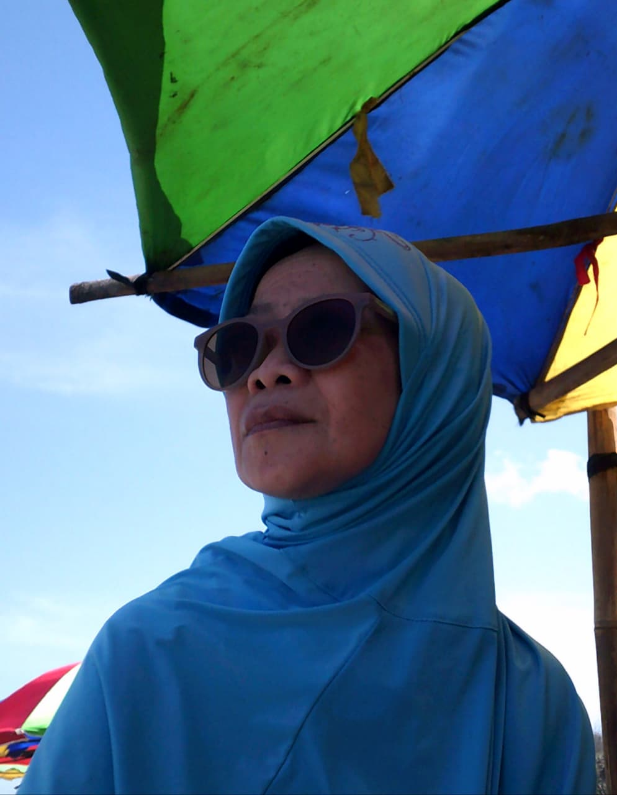

Tiup Lilin 🎂
Buka Ucapan 💌
Barakallah fii umrik, Ibu. 🎂💐 Selalu diberi kesehatan, panjang umur, ketenangan hati, dan kebahagiaan, dan setiap doa dikabulkan satu per satu oleh Allah. Aamiin ya Rabbal ‘alamiin 🤲🏻✨